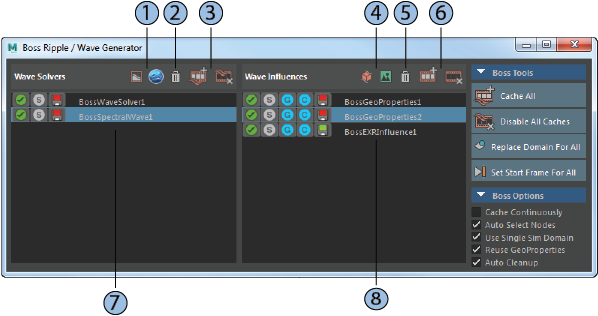

BOSS 编辑器概述
选择
“BOSS
>
BOSS 编辑器”(Boss > Boss Editor)
以打开
“BOSS 涟漪/波浪生成器”(Boss Ripple/Wave Generator)
窗口。

添加解算器：波浪或光谱。
删除选定的解算器。
为选定的解算器创建或删除缓存。
将影响添加到选定的解算器：几何体或 EXR 图像。
删除选定的影响。
为选定的影响创建或删除缓存。
选择一个解算器以将其影响显示在右侧，或者编辑其属性。使用图标禁用、单放或激活其缓存。
选择要编辑其属性的影响。使用图标禁用、单放或将其用作生成器、将其用作碰撞对象或激活其缓存。
父主题：
BOSS - Bifrost 海洋模拟系统